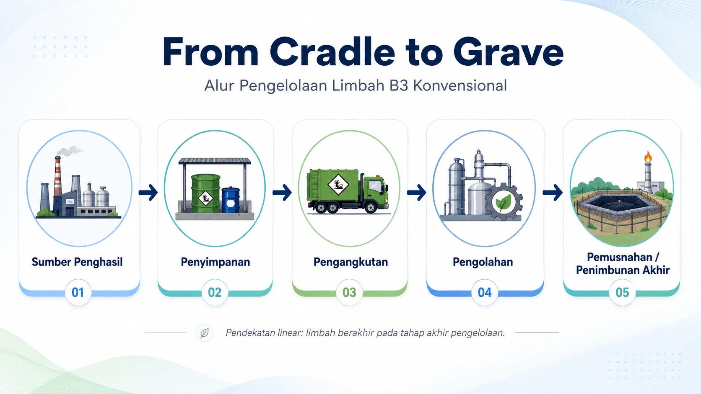
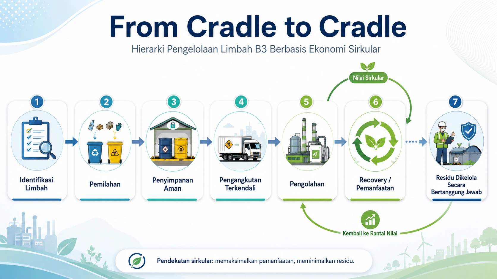

Model Linear
Tentang B3 · Circular Economy
Pengelolaan limbah modern tidak hanya berhenti pada pembuangan akhir, tetapi mendorong siklus pemanfaatan kembali secara aman dan bertanggung jawab.
Hierarki Pengelolaan Limbah B3
Pengelolaan limbah B3 terus berkembang dari pendekatan lama From Cradle to Grave menuju pendekatan yang lebih modern, yaitu From Cradle to Cradle. Perubahan ini menekankan bahwa limbah tidak selalu harus berakhir sebagai beban lingkungan, tetapi dapat dikelola, dipilah, diproses, dan pada kondisi tertentu dimanfaatkan kembali secara aman dan bertanggung jawab.
Konsep cradle-to-cradle mencegah produk atau material lama terbuang sia-sia. Sebaliknya, bahan dan komponen yang masih memiliki nilai dapat digunakan kembali, dipulihkan, atau didaur ulang sesuai karakteristik dan ketentuan teknis yang berlaku.
Transformasi dari From Cradle to Grave menuju From Cradle to Cradle adalah perubahan cara pandang dalam pengelolaan limbah B3. Jika sebelumnya limbah hanya dilihat sebagai akhir dari proses produksi, maka kini limbah perlu dipahami sebagai bagian dari siklus material yang harus dikelola dengan cermat.


Cradle to Cradle
Mengurangi potensi timbulan limbah sejak dari sumber melalui perencanaan proses dan pemilahan yang lebih baik.
Mendorong penggunaan kembali material yang masih aman dan layak sesuai ketentuan teknis.
Mengupayakan pengambilan kembali nilai material atau energi dari limbah yang memenuhi syarat.
Untuk residu yang tidak dapat dimanfaatkan, pengelolaan akhir tetap harus dilakukan secara aman dan terdokumentasi.